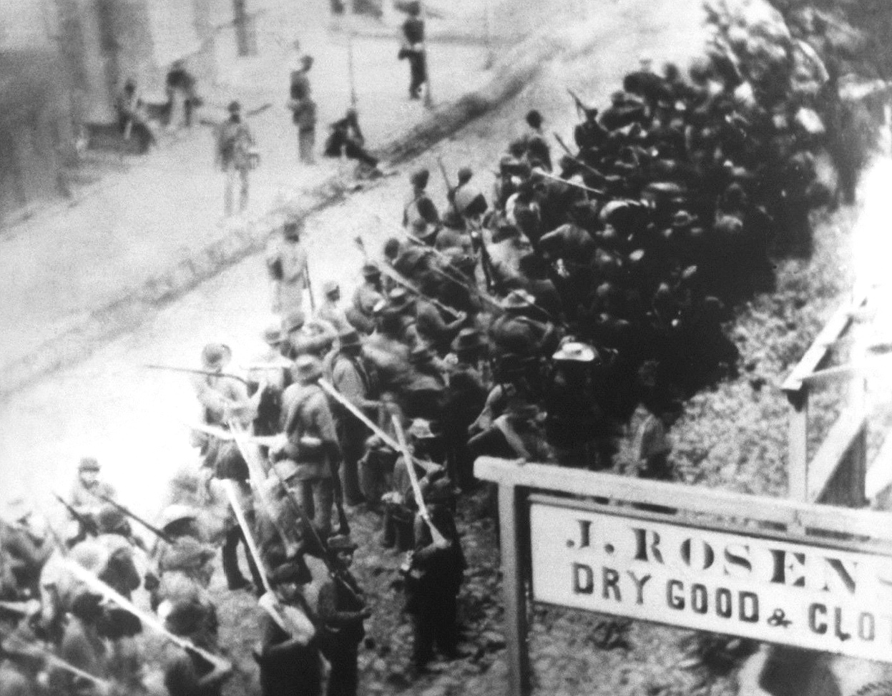
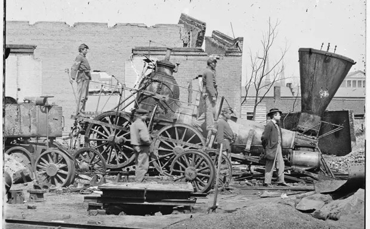
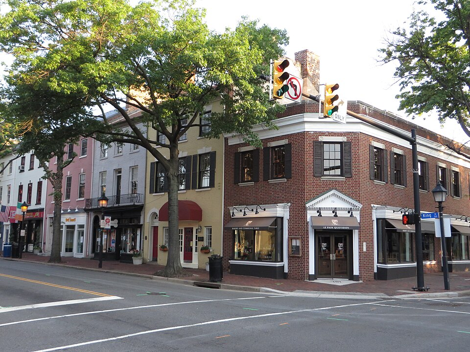
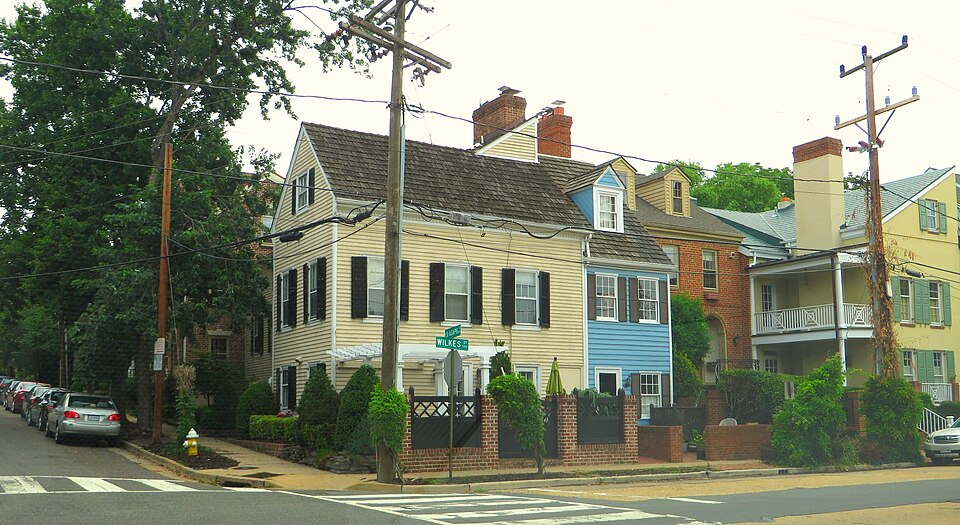
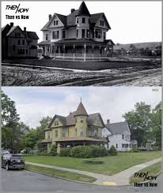

The Town
A town built on old roads
Foxglove Hollow was settled in the early 1800s along an old post road in what is now Montgomery County, Maryland. Like much of the county, the town saw real disruption during the Civil War, when cavalry passed through in 1864, leaving considerable disorder in their wake. Several town records, including land office documents, were disturbed or went missing during that period and were never fully recovered.


The Brackenhollow family has called Foxglove Hollow home since before that disruption, and Hawthorn House has stood on its current foundation since shortly after. A handful of land parcels in town changed hands in the years following the war, some through proper sale, others through arrangements the surviving paperwork describes only vaguely. Local genealogists, including our own town historian, have spent years trying to untangle which is which.


The House
Hawthorn House, then and now

The house has been added to, lovingly restored, and meticulously maintained across six generations, widely considered one of the finest surviving examples of Victorian architecture in this part of Maryland. Its original hand-carved millwork, stained glass, and the fireplace in the upstairs study have all been preserved exactly as built in 1864. A local appraiser — someone whose job is to estimate what a property is worth to sell — once told Eleanor that Hawthorn House would likely fetch over two million dollars on the open market. Eleanor reportedly laughed and said she had no intention of finding out. Its records, kept faithfully by the family and by the Foxglove Hollow Historical Archive, fill several boxes in the town's small but proud collection.
The land underneath it has drawn attention too. A development company, Meridian Land Group, has spent the last two years quietly approaching old-town property owners about selling, hoping to assemble enough adjoining parcels for a larger project. Most families in Foxglove Hollow have politely declined. Whether Hawthorn House will follow them is not something the family has discussed publicly. Someone matching the description of a real estate appraiser has been seen at the house more than once this year — the kind of visit that happens when a family is quietly deciding whether to sell.
Much of that record is open for anyone to read. Some of it, the family has always been a little more careful with.
The Archive
Inside the historical collection

Priya Whitfield runs the archive's digital presence carefully. She is particular about what gets indexed and what stays quiet. Some materials, she has said more than once, are not meant for general discovery.